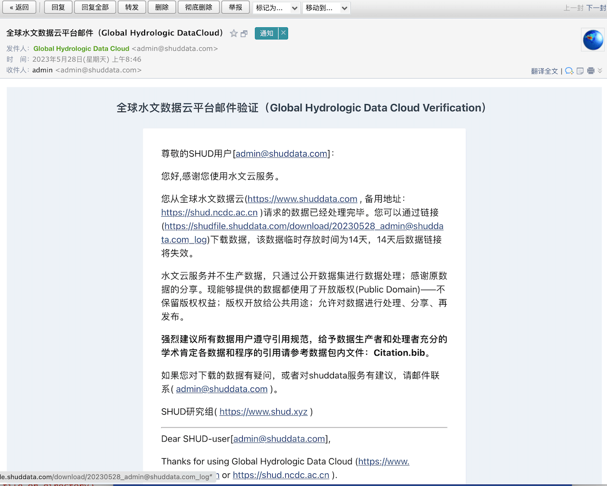
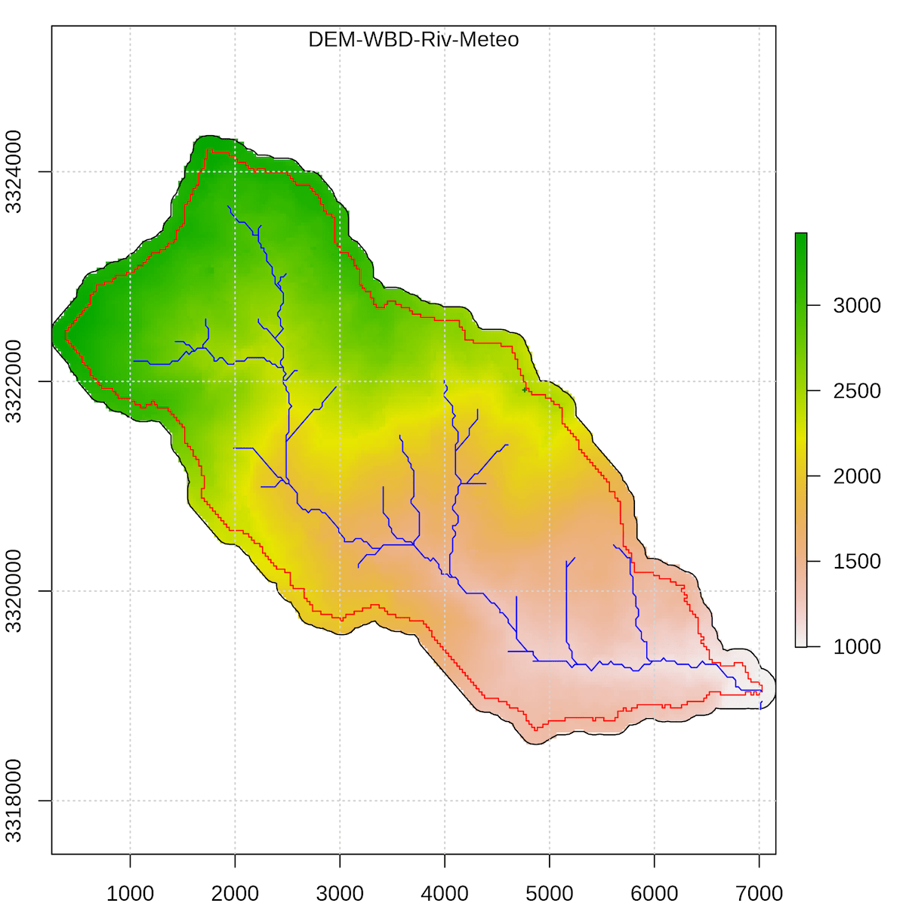
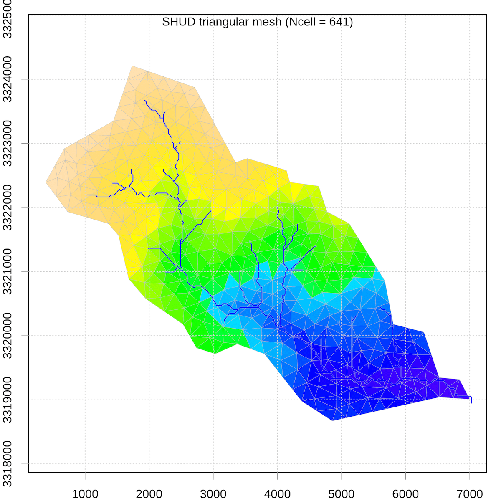
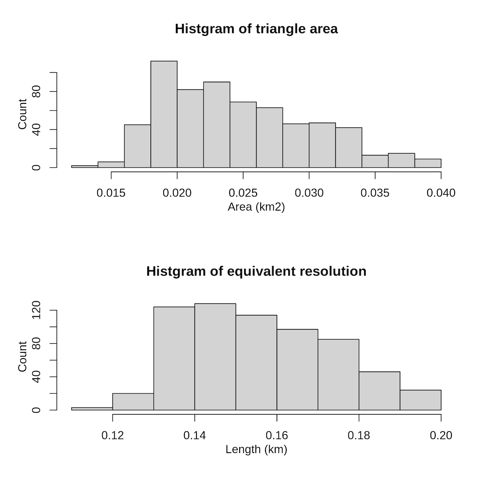

Chapter 5 练习
本节我们通过一个案例来展示，如何通过GHDC获取数据与建立水文模型。
这里的案例是使用四川彭州市的龙漕沟，是一个16 \(km^2\) 的小山沟。
5.1 上传边界文件，设定模拟参数
- 流域：龙漕沟，面积 16 \(km^2\). 四川成都，彭州市
- 年份：2017-2018
- 单元数：400个； \(16\times10^6 m^2/ 400 = 40,000 m^2 \approx 200 m\times 200 m\)
- 气象驱动：CMFD （He et al., 2020），数据可用范围1979-2018

网页显示的流域边界
5.3 查收邮件，下载数据

网页显示的流域边界
wget -cr https://shudfile.shuddata.com/download/20230528_admin@shuddata.com_log/

建模的流域边界等

SHUD模型三角形网

SHUD模型单元的面积/分辨率分布
5.5 分析结果
在StaticFiles/SHUD_model/rAnalysis中，使用RStudio打开rAnalysis.Rproj来分析数据。
#' ===================================================
#' Analysis the output results from SHUD model
#' Author: Lele Shu <shulele@lzb.ac.cn>
#' Website: www.shud.xyz
#' Date: 2023-05-27
#' Copyright: MIT-Licence
#' ===================================================
#' Function:
#'
#'
rm(list=ls())
library(rSHUD) # 加载rSHUD包
library(xts)
library(raster)
library(rgdal)
library(sp)
library(ggplot2)
prjname = 'lcg' # 本项目名称
shud.env(prjname = prjname,
inpath = file.path('../../../Modeling/input/', prjname),
outpath = file.path('../../../Modeling/output/', paste0(prjname, '.out')))
AA = getArea() # 读取三角形单元面积
oid = getOutlets() # 读取河流出口的ID号
spr=sp.riv2shp() # 生成河流的shapefile
qdown = readout('rivqdown') # 读取所有河流的向下径流
qs = ts2Daily(qdown[, oid[1]])
ts = time(qs)
autoplot(qs[,]) # 绘制径流过程线图
gw=readout('eleygw') # 读取所有三角形单元的地下水变化时间序列
mgw = colMeans(gw) # 计算时间段内的地下水均值。
sp.mesh = sp.mesh2Shape(dbf = data.frame('gw'=mgw)) # 生成三角形的shapefile。
plot_sp(sp.mesh, zcol = 'gw')
plot(add=T, spr, col='red')[出口径流的过程线](Figure/practice/s5.1.png] [流域地下水储量的空间分布](Figure/practice/s5.2.png]